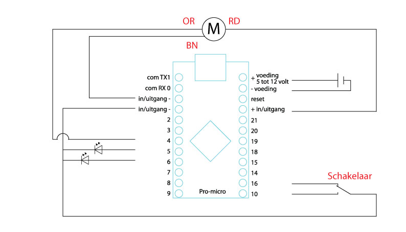

Hier meer informatie voor de dag in het fablab op 21 februari.
Ik weet niet hoe lang we bezig zijn (zeker wel 5 uurtjes denk ik) dus wil ik rond 10:00 uur beginnen zodat we genoeg tijd hebben om uit te lopen.
Ik zal zorgen dat er eten en drinken is voor de lunch.
In verband met de bouwerkzaamheden aan de nieuwe bioscoop is de ingang van de kaasfabriek aan de achterkant, langs het spoor. Schrik niet van alle spullen die je daar ziet liggen, dat noemen ze artistieke vrijheid geloof ik.
We gaan een machine maken en programmeren, iedereen is er voor zijn plezier dus wanneer iemand geen zin meer heeft of eerder naar huis moet dan kan dat natuurlijk. Het lijkt me goed dat iedereen het telefoonnummer van zijn 'taxi' mee neemt voor het geval dat.
Voor de terugweg kan ik nog 4 kinderen thuis afzetten als dat nodig is.
Ik ben te bereiken op 06-31698420 of op de dag zelf ook op het vaste nummer van de kaasfabriek 072-3690554
Op de dag zelf gaan we ook een microcontroller programmeren. Wanneer jullie hiervoor een eigen laptop willen gebruiken dan is het makkelijk om hier vooraf de programmeer omgeving op te installeren.
Op deze manier heb je direct een laptop waarmee je later thuis verder kunt programmeren (als je dat tenminste leuk vind).
De software kun je hier downloaden en is beschikbaar voor linux mac en windows.
Wanneer je geen laptop hebt of mee wilt nemen dan hebben we er genoeg liggen dus dat is geen probleem maar laat het wel even weten zodat ik ze klaar kan zetten.
Dit is de volgorde waarop we de machine gaan maken:
Tussendoor gaan wa omstebeurt 1 beugel printen op de 3d printer en wanneer de lasersnijder vrij is kun je het schema in de deksel laten graveren.
Dit is het schema voor de bedrading

De timer library vind je hier:
https://github.com/codecollective/arduino_simple-timer
Download de zip en ga in het arduino programma naar "Sketch > Include library > Add .Zip library" zoek het zipfile op dat je gedownload hebt. Op de pagina waar je de library gedownload hebt vind je ook een voorbeeld hoe je hem kunt gebruiken.